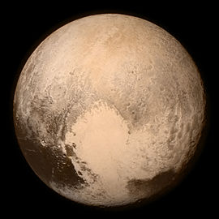
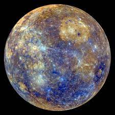
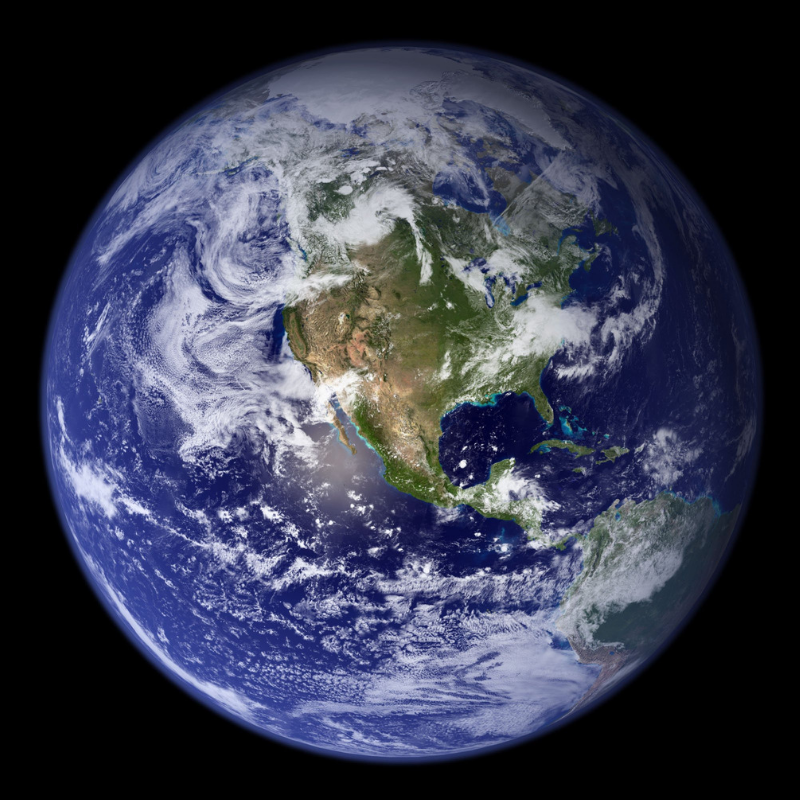
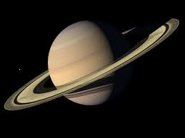

المجموعة الشمسية
.كما نعلم جميعًا ، تتكون المجموعة الشمسية من ثمانية كواكب ، تم نفي أحدها بسبب دورنهآ الغير الكامل على الشمس ، واسمها بلوتون

:كما قلنا من قبل ، تتكون المجموعة الشمسية من 8 كواكب وهي
عطارد
.عطارد هو الكوكب الأقرب من الشمس، ليس له جو، وهذا ما يفسر درجة حرارته التي يمكن أن تتراوح بين 173 درجة و 427 درجة

الزهرة
.يطلق عليه الكوكب التوأم للأرض لأنهما متشابهان للغاية ، لكن الحياة غير ممكنة على هذا الكوكب بسبب العديد من الغازات السامة التي يحتويها
الأرض
.كما تعلم ، هذا هو المكان الذي نعيش فيه وهو الكوكب الوحيد الذي توجد فيه الحياة ، فهو مكون من 70٪ ماء و 30٪ أرض

المريخ
.يُعرف باسم الكوكب الأحمر ، وهو أقرب كوكب إلى الأرض ، ويبذل الإنسان جهودًا كثيرة من أجل العيش هناك
المشتري
.إنه أكبر كوكب في المجموعة الشمسية ، ويبلغ حجمه 1300 مرة حجم الأرض والعواصف دقيقة هناك
زحل
.يعتبر كوكب زحل كأجمل كوكب في المجموعة الشمسية ، فهو ثاني أكبر كوكب ، حلقته عبارة عن 90٪ تلج و 10٪ من أقماره عديدة

أورانوس
أورانوس هو أحد أبرد الكواكب في المجموعة الشمسية، ويتكون بالكامل من غاز وهو ثاني أكثر الكواكب بعدًا عن الشمس
نبتون
.نبتون هو أبعد كوكب عن الشمس ، وأبرد كوكب يتكون بالكامل من الغاز